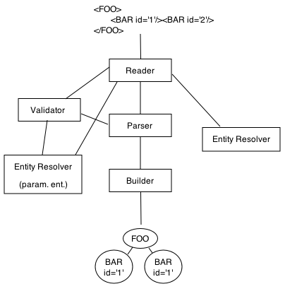

NanoXML/Java 2.1
Chapter 4. Advanced Topics
This chapter explains how you can customize the NanoXML parser setup. Unlike NanoXML 1, NanoXML/Java 2 is designed as a framework: it is composed of many different components which you can plug together. It's possible to change the reader, the builder, the validator and even the parser.
4.1. The NanoXML Reader
4.2. The NanoXML Parser
4.3. The NanoXML Validator
4.4. The NanoXML Entity Resolvers
4.4.1. Standard Entities
4.4.2. Parameter Entities
4.5. The NanoXML Builder
NanoXML/Java comes with one set of components. Except for NanoXML/Lite, every branch offers its own set of components customized for a certain purpose. NanoXML/SAX offers components for using NanoXML as a parser for the SAX framework.
The following figure gives a short representation of the major components.

The reader retrieves data from a Java input stream and provides character data to the other components.
The parser converts the character data it retrieves from the reader to XML events which it sends to the builder.
The validator parses a DTD and validates the XML data. The current validator does only the minimum necessary for a non-validating parser.
The entity resolvers converts entity references (&...;) and parameter entity references (%...;) to character data. The resolver uses the reader to access external entities.
The builder interpretes XML events coming from the parser and builds a tree of XML elements. The standard builder creates a tree of IXMLElement. You can provide your own builder to create a custom tree or if you are interested in the XML events themselves, e.g. to use XML streaming.
4.1. The NanoXML Reader
The reader retrieves data from some source and feeds it to the other components.
The reader is basically a stack of push-back readers. Every time a new data stream becomes active, the current reader is pushed on a stack. When the current reader has no more data left, the parent reader is popped from the stack.
If you want to implement public IDs using e.g. a catalog file similar to SGML, you could implement a reader by overriding the method openStream of StdXMLReader:
public class MyReader
extends StdXMLReader
{
private Properties publicIDs;
public MyReader(Properties publicIDs)
{
this.publicIDs = publicIDs;
}
public Reader openStream(String publicID,
String systemID)
throws MalformedURLException,
FileNotFoundException,
IOException
{
if (publicID != null) {
systemID = publicIDs.getProperty(publicID,
systemID);
}
return super.openStream(publicID, systemID);
}
}
In this example, you have to provide a properties object which maps public IDs to system IDs.
4.2. The NanoXML Parser
The parser analyzes the character stream it retrieves from the reader and sends XML events to the builder. It uses a validator to validate the data and an entity resolver to resolve general entities. You rarely need to create a custom parser. If you need to, you have to implement IXMLParser.
4.3. The NanoXML Validator
The validator parses the DTD and checks the XML data. NanoXML 2.0 uses a NonValidator implementation that only performs the minimum necessary for a non-validating parser.
As a DTD is very vague, you can implement your own validator to perform a more fine-grained check of the XML data. The easiest way to create your own validator is to create a subclass of ValidatorPlugin.
The following example shows how to implement a validator. It checks that every attribute named "id" starts with three capital letters.
public class MyValidator
extends ValidatorPlugin
{
public void attributeAdded(String key,
String value,
String systemID,
int lineNr)
{
boolean valid = true;
if (key.equals("id")) {
if (value.length() < 3) {
valid = false;
} else {
for (int i = 0; i < 3; i++) {
char ch = value.charAt(i);
if ((ch < 'A') || (ch > 'Z')) {
valid = false;
}
}
}
}
if (valid) {
super.attributeAdded(key, value,
systemID, lineNr);
} else {
this.attributeWithInvalidValue(systemID,
lineNr, null, key, value);
}
}
}
To register the validator to a parser, use the following code:
IXMLParser parser ...
...
IXMLValidator val1 = parser.getValidator();
MyValidator val2 = new MyValidator();
val2.setDelegate(val1);
parser.setValidator(val2);
4.4. The NanoXML Entity Resolvers
The entity resolver converts entity references to XML data. If you want e.g. to retrieve entity values from a database, you have to create your own resolver.
Entity resolvers have to implement IXMLEntityResolver. Usually, you only have to make a subclass of XMLEntityResolver and implement the method getEntity or openExternalEntity.
Entities can be used in the XML data and in the DTD. As these entities are independent of each other, there are two entity resolvers.
4.4.1. Standard Entities
The resolver for standard entities has to be registered to the parser by calling setResolver. The following example registers a resolver that forces the entity "&foo;" to be resolved to "bar":
import net.n3.nanoxml.*;
import java.io.*;
class MyResolver
extends XMLEntityResolver
{
public Reader getEntity(IXMLReader xmlReader,
String name)
throws XMLParseException
{
if (name.equals("foo")) {
return new StringReader("bar");
} else {
return super.getEntity(xmlReader, name);
}
}
}
public class Demo
{
public static void main(String[] args)
throws Exception
{
IXMLParser parser
= XMLParserFactory
.createDefaultXMLParser();
parser.setResolver(new MyResolver());
IXMLReader reader
= StdXMLReader.fileReader("test.xml");
parser.setReader(reader);
IXMLElement xml = (IXMLElement) parser.parse();
XMLWriter writer = new XMLWriter(System.out);
writer.write(xml);
}
}
4.4.2. Parameter Entities
The resolver for parameter entities has to be registered to the validator by calling setParameterEntityResolver. The following example show a custom version of the Demo class that registers MyResolver as a parameter entity resolver.
public class Demo
{
public static void main(String[] args)
throws Exception
{
IXMLParser parser
= XMLParserFactory
.createDefaultXMLParser();
IXMLValidator validator
= parser.getValidator();
validator.setParameterEntityResolver(
new MyResolver());
IXMLReader reader
= StdXMLReader.fileReader("test.xml");
parser.setReader(reader);
IXMLElement xml = (IXMLElement) parser.parse();
XMLWriter writer = new XMLWriter(System.out);
writer.write(xml);
}
}
4.5. The NanoXML Builder
The builder interpretes XML events coming from the parser and builds a tree of Java objects. When the parsing is done, the builder hands over its result to the parser.
As explained in chapter 3, the builder can also be used to read XML data while it's being streamed. This feature is useful if you don't want to wait until all the data has been read before processing the information.
As an example, we have the following XML structure (document.dtd):
<!ELEMENT Chapter (Paragraph*)>
<!ATTLIST Chapter
title CDATA #REQUIRED
id CDATA #REQUIRED>
<!ELEMENT Paragraph (#PCDATA)>
<!ATTLIST Paragraph
align (left|center|right) "left">
The elements are put in the Java classes Chapter and Paragraph which, for convenience, extend the following base class:
public class DocumentElement
{
protected Properties attrs;
protected Vector children;
public DocumentElement()
{
this.attrs = new Properties();
this.children = new Vector();
}
public void setAttribute(String attrName,
String value)
{
this.attrs.put(attrName, value);
}
public void addChild(DocumentElement elt)
{
this.children.addElement(elt);
}
}
This base class simply makes it easy for our builder to set attributes and to add children to an element.
The Chapter and Paragraph classes extend this base class to give more practical access to their attributes and children:
public class Chapter
extends DocumentElement
{
public String getTitle()
{
return this.attrs.getProperty("title");
}
public String getID()
{
return this.attrs.getProperty("id");
}
public Enumeration getParagraphs()
{
return this.children.elements();
}
}
public class Paragraph
extends DocumentElement
{
public static final int LEFT = 0;
public static final int CENTER = 1;
public static final int RIGHT = 2;
private static Hashtable alignments;
static {
alignments = new Hashtable();
alignments.put("left", new Integer(LEFT));
alignments.put("center", new Integer(CENTER));
alignments.put("right", new Integer(RIGHT));
}
public String getContent()
{
return this.attrs.getProperty("#PCDATA");
}
public int getAlignment()
{
String str = this.attrs.getProperty("align");
Integer align = alignments.get(str);
return align.intValue();
}
}
The builder creates the data structure based on the XML events it receives from the parser. Because both Chapter and Paragraph extend DocumentElement, the builder is fairly simple.
import net.n3.nanoxml.*;
import java.util.*;
import java.io.*;
public class DocumentBuilder
implements IXMLBuilder
{
private static Hashtable classes;
private Stack elements;
private DocumentElement topElement;
static {
classes = new Hashtable();
classes.put("Chapter", Chapter.class);
classes.put("Paragraph", Paragraph.class);
}
public void startBuilding(String systemID,
int lineNr)
{
this.elements = new Stack();
this.topElement = null;
}
public void newProcessingInstruction(String target,
Reader reader)
{
// nothing to do
}
public void startElement(String name,
String nsPrefix,
String nsSystemID,
String systemID,
int lineNr)
{
DocumentElement elt = null;
try {
Class cls = (Class) classes.get(name);
elt = (DocumentElement) cls.newInstance();
} catch (Exception e) {
// ignore the exception
}
this.elements.push(elt);
if (this.topElement == null) {
this.topElement = elt;
}
}
public void endElement(String name,
String nsPrefix,
String nsSystemID)
{
DocumentElement child
= (DocumentElement) this.elements.pop();
if (! this.elements.isEmpty()) {
DocumentElement parent
= (DocumentElement)this.elements.peek();
parent.addChild(child);
}
}
public void addAttribute(String key,
String nsPrefix,
String nsSystemID,
String value,
String type)
{
DocumentElement child
= (DocumentElement) this.elements.peek();
child.setAttribute(key, value);
}
public void elementAttributesProcessed(
String name,
String nsPrefix,
String nsSystemID)
{
// nothing to do
}
public void addPCData(Reader reader,
String systemID,
int lineNr)
throws IOException
{
StringBuffer str = new StringBuffer(1024);
char[] buf = new char[bufSize];
for (;;) {
int size = reader.read(buf);
if (size < 0) {
break;
}
str.append(buf, 0, size);
}
this.addAttribute("#PCDATA", null, null,
str.toString(), "CDATA");
}
public Object getResult()
{
return topElement;
}
}
Note that, for simplicity, error and exception handling is not present in this example. The builder holds a stack of the current elements it builds. Character data is read from a reader. The method addPCData reads this data in blocks of 1K.
Finally, this application sets up the NanoXML parser and converts an XML document to HTML which it dumps on the standard output:
import java.util.*;
import net.n3.nanoxml.*;
public class XML2HTML
{
public static void main(String[] params)
throws Exception
{
IXMLBuilder builder
= new DocumentBuilder();
IXMLParser parser
= XMLParserFactory
.createDefaultXMLParser();
parser.setBuilder(builder);
IXMLReader reader
= StdXMLReader.fileReader(param[0]);
parser.setReader(reader);
Chapter chapter = (Chapter) parser.parse();
System.out.println("<!DOCTYPE ... >");
System.out.print("<HTML><HEAD><TITLE>");
System.out.print(chapter.getTitle());
System.out.println("</TITLE></HEAD><BODY>");
System.out.print("<H1>");
System.out.print(chapter.getTitle());
System.out.println("</H1>");
Enumeration enum = chapter.getParagraphs();
while (enum.hasMoreElements()) {
Paragraph para
= (Paragraph) enum.nextElement();
System.out.print("<P>");
System.out.print(para.getContent());
System.out.println("</P>");
}
System.out.println("</BODY></HTML>");
}
}
If we run the example on the following XML file:
<!DOCTYPE Chapter SYSTEM "document.dtd">
<Chapter id="ch01" title="The Title">
<Paragraph>First paragraph...</Paragraph>
<Paragraph>Second paragraph...</Paragraph>
</Chapter>
The output will be:
<!DOCTYPE HTML PUBLIC '-//W3C//DTD HTML 4.01//EN'
'http://www.w3.org/TR/html4/strict.dtd'>
<HTML><HEAD><TITLE>The Title</TITLE></HEAD><BODY>
<H1>The Title</H1>
<P>First paragraph...</P>
<P>Second paragraph...</P>
</BODY>
|
Copyright ©2000-2002 Marc De
Scheemaecker,
All Rights Reserved.
Last update: January 8th, 2002. |

|